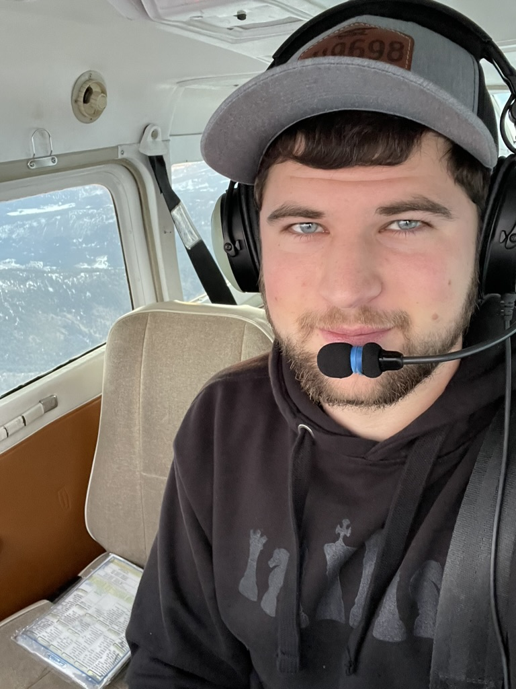

Derek Graber

Summary
I am a details person and love making something from scratch.
I've only dabbled in programming a few times but since March 2024 I've
been taking it more seriously and trying to learn the skill of coding.
I have a basic understanding and knowledge of Python, HTML, and CSS. Programming,
coding, and web development fascinate me and I want to learn more about them.
Education
- Kootenai Valley Mennonite School(2009-2019): Bonners Ferry, Idaho/
Highschool Diploma
- IEC Chesapeake E Apprenticeship(October 2019-April 2023)
Work Experience
Cabinet Shop Worker - Cabinets Northwest LLC
March 2016 - December 2018
- Sanded cabinets, drawers, shelves, trim, etc.
- Stained various trim pieces.
- Swept and cleaned cabinet shop.
Residential Construction Worker - Graber & Sons Construction
June 2018 - September 2019, May 2023 - June 2023
- General house and shop construction.
- Everything from rough framing to finish trim work.
Apprentice Electrician - Ensz Electric Inc
September 2019 - March 2023
- Worked as a licensed apprentice electrician and took online schooling for it at the same time.
- Mostly did residential wiring with a little commercial and industrial as well.
Residential Construction Worker - Self-Employed
July 2023 - March 2024
- General house and shop construction again.
- Did everything from rough framing to finish work again.
- Also did drywall work from start to finish and house insulating.
Projects
Skills
Some of my skills and areas of expertise:
- Details work
- Organization
Other Achievements
- Private Pilot's License
- Running a small reselling busines on eBay